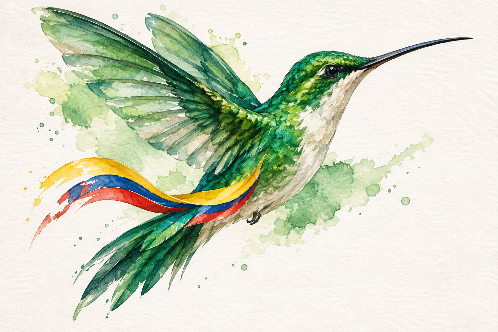

Coloca aquí
assets/colibri-tricolor.png
Plantilla base
Colibrí tricolor
El diseño original: colibrí verde esmeralda en vuelo, con la cinta tricolor (amarillo, azul, rojo) y estilo acuarela hecho a mano. Esta es la base que se mantiene en todas las variantes.
- Animal: Colibrí
- Posición: Vuelo lateral, alas abiertas
- Paleta: Verde esmeralda · tricolor